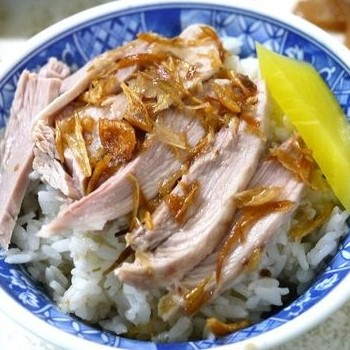
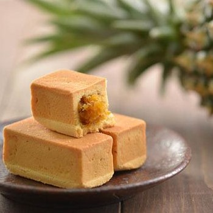

| 嘉義市火雞肉飯 | |
| 火雞肉飯是一道看似簡單卻處處講究的庶民美食。選用以水煮再悶浸的方式處理火雞肉，保留其滑嫩多汁的口感，切成絲或片後鋪在熱騰騰的米飯上，入口不柴不澀。搭配的米飯多選用西螺米，煮熟後再悶五分鐘，使米粒飽含水分，Q彈有嚼勁。醬汁則以火雞高湯為基底，融合黑豆醬油、雞油或豬油與獨家配方，香氣濃郁，是整碗飯的靈魂。最後撒上手工製作的油蔥酥，香氣撲鼻、酥脆可口，為火雞肉飯畫龍點睛。一碗小小的火雞肉飯，蘊含的不只是味蕾的滿足，更是傳統與用心的結晶。 |  |
| 嘉義市鳳梨酥 | |
| 嘉義市的鳳梨酥別具地方風味，選用在地關廟或民雄種植的土鳳梨製作內餡，酸甜適中、纖維豐富，口感紮實不膩。不同於一般使用冬瓜混合的版本，嘉義不少店家堅持以純鳳梨熬製餡料，呈現出自然的果酸與濃郁果香。外皮酥鬆香脆，入口即化，與濕潤飽滿的果餡相得益彰。一口咬下，能感受到餅皮的奶香與鳳梨的果香交織，是送禮自用兩相宜的伴手禮。嘉義鳳梨酥不僅傳承台灣糕餅文化，更結合在地農產與手工技藝，是來嘉義不可錯過的經典甜點。 |  |
| 嘉義縣空氣圖書館 | |
| 位於海拔1000公尺的梅山鄉太平村，空氣圖書館是一個特別的地方，結合了人文、文創和餐飲，讓人彷彿置身於一座植物與書籍交融的美妙空間。 以灰白色調和原木書架為主，並加入了豐富的蕨類植物，營造出一種溫馨而富有味道的氛圍。 即使名為圖書館，但這裡並不只是讀書的地方，還可以欣賞植物、拍照、購物和享用美食。 來這裡感受大自然與文化的結合，讓身心得到放鬆與滋養。 |
 |